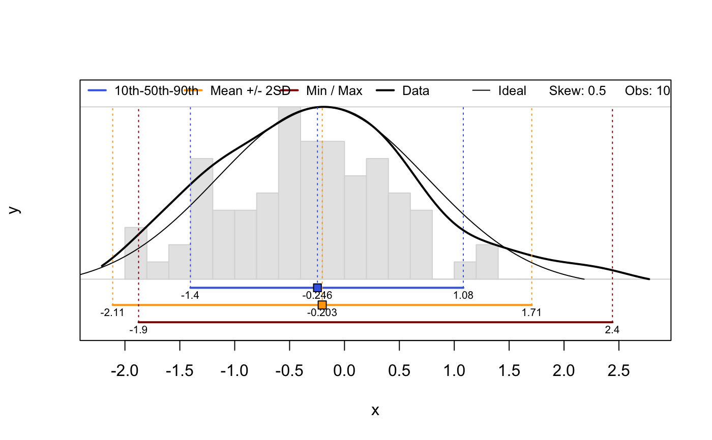
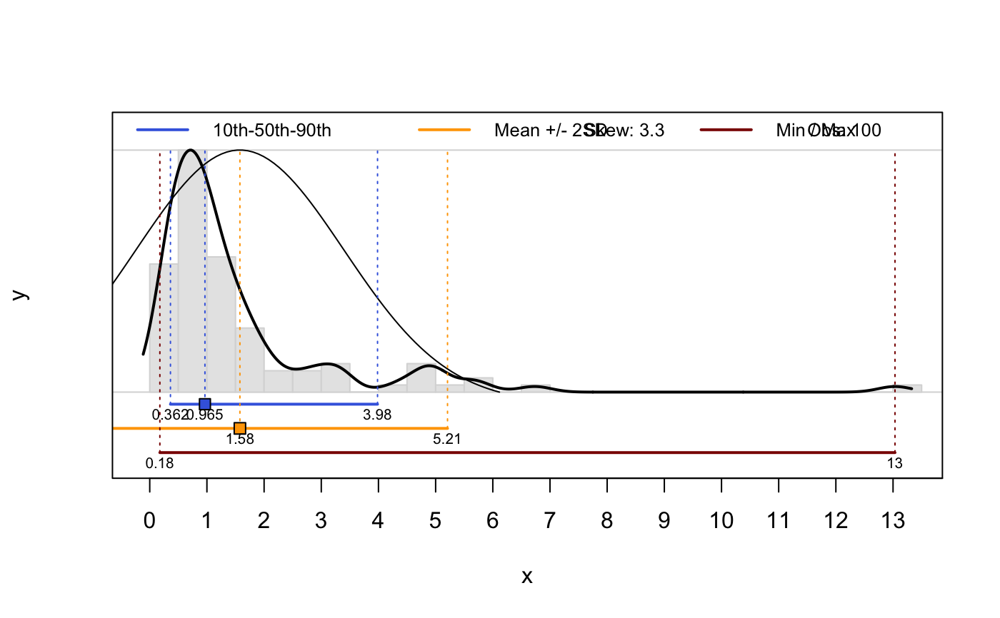

percentileDemo.RdThis function can be used to graphically demonstrate the relationship between distribution shape, an idealized normal distribution (based on sample mean and sd) shape, and measures of central tendency / spread.
percentileDemo(x, labels.signif = 3, pctile.color = "RoyalBlue", mean.color = "Orange", range.color = "DarkRed", hist.breaks = 30, boxp = FALSE, ...)
| x | vector of values to summarize |
|---|---|
| labels.signif | integer, number of significant digits to be used in figure annotation |
| pctile.color | color used to demonstrate range from 10th to 90th percentiles |
| mean.color | color used to specify mean +/- 2SD |
| range.color | color used to specify data range |
| hist.breaks | integer, number of suggested breaks to |
| boxp | logical, add a box and whisker plot? |
| ... | further arguments to |
A 1-row matrix of summary stats is invisibly returned.
https://ncss-tech.github.io/soil-range-in-characteristics/why-percentiles.html
D.E. Beaudette
This function is mainly for educational purposes.
